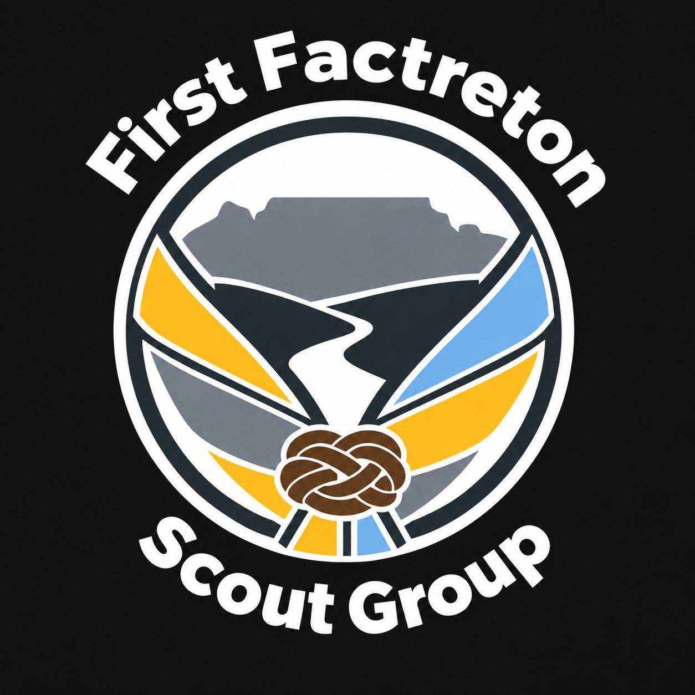

First FactretonScout GroupScouts at First Factreton
Scouts is for ages 11–17. Our usual meeting is Wednesday, 18:00–20:00.
Contact the group
Donovan Storkey
Scout Group Leader
071 686 5503
1stfactretonscoutgroup@gmail.com
Our usual evenings
Cubs: Mondays 18:00–19:30
Scouts: Wednesdays 18:00–20:00
Sunderland Street Scout Hall, next to the community centre, Factreton.
Arrange a first visit with a leader and check school breaks or changes before travelling.
JavaScript is off. You can still use these contact details, page links and downloads. Enable JavaScript for the full illustrated site and interactive activities.